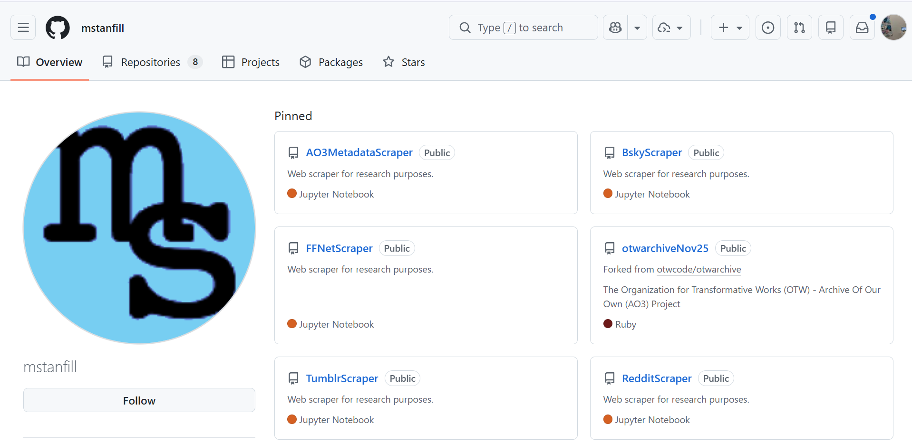

Meredith Martin — what we are trained to recognize
Martin opens by comparing disciplinary training to training an AI model: what we recognize about poetry is the product of what went into preparing us.
We — and those who evaluate us — are trained to recognize traditional, single-authored, gradually-developed written outputs.
We are not trained to recognize collaboration, public scholarship, or the creation of software and data.
Martin argues humanists need to learn to recognize that second category of work.
Interdisciplinarity, Collaboration, Recognition
Martin — making your work legible
This matters as we turn toward job materials in the back half of the semester:
How will you make what you do legible to people with traditional disciplinary mindsets?
We’ve had to do this legibility labor ourselves in the English department and the College of Arts and Humanities.
A Politics of Citation
Martin — citing scholar-built resources
“Scholars need to cite scholar-built resources and workflows (software, web applications, databases) as research outputs.”
— Martin, 543
If this becomes a collective standard, it’s far easier to argue for the value of these necessary outputs.
Not Just AI for Humanists
Martin — humanities for AI
“Is the endgame to improve the closed LLMs with our input, to provide drag on the corporations that control them, or to build our own alternatives and explain them to different publics? … the more we own our expertise and turn it into actionable and, yes, marketable, interventions, the more likely our expertise will be taken seriously.”
— Martin, 543
Not just AI for Humanists (making the tech intelligible to us) but humanities for AI (bringing our knowledge to bear on these tools).
AI-Assisted Programming vs. Vibe Coding
Simon Willison — two different things
Term coined by Andrej Karpathy in 2025. Willison defines vibe coding as “building software with an LLM without reviewing the code it writes.”
Both have their place — but they aren’t the same thing.
“My golden rule for production-quality AI-assisted programming is that I won’t commit any code to my repository if I couldn’t explain exactly what it does to somebody else.”
— Willison
When Vibe Coding Makes Sense
Willison — low stakes, but watch the edges
Low stakes: bugs or security flaws won’t cause real harm.
Personal or throwaway projects — automating tedious tasks, not tools others rely on.
Watch for secrets (API keys, passwords) and data privacy: if private data is involved, you need to understand how the code handles it.
Watch for demands on other platforms’ servers — especially for things like web scrapers.

github.com/mstanfill — research scrapers as public scholarly output
Sandboxing as a Safety Net
Willison — why Claude Artifacts felt safe
A sandbox like Claude Artifacts makes vibe coding safer:
It restricts code to a locked-down iframe, allows only approved libraries, and blocks network requests to other sites.
That makes it much harder to cause harm — but it also limits what projects can do.
Inside the sandbox you can’t reach external APIs or run prompts against an LLM — which is exactly why this week we move to Claude Code Web.
Using Git with Coding Agents
Willison — the vocabulary
Git
Open-source software for version control.
Version control
A way to “record how that code changes over time and investigate and reverse any mistakes” — especially useful when AI is changing code for you.
GitHub
A website where you can host and collaborate on software, built on Git to track changes.
Git: Repositories and Commits
Willison — key terms
Repository
Where your Git project is stored, whether locally or in the cloud.
Commits
“Timestamped bundles of changes to one or more files accompanied by a commit message describing those changes.”
It’s worth understanding these basics even if you never manually manage your repository and commits.
Git as a Collaboration Tool
Willison — agents and merge conflicts
Git is a professional tool for collaboration: learning to use it consistently prepares students to work with both people and agents.
“Coding agents can navigate the most Byzantine of merge conflicts, reasoning through the intent of the new code and figuring out what to keep and how to combine conflicting changes.”
— Willison
The hardest part of Git — resolving conflicts between versions — is exactly what agents are now good at.
The Index and the Vector
Dan Cohen — the problem with precise vocabulary
Traditional library indexes require precise vocabulary: search terms must match controlled keywords.
“Few first-year students walk into a museum … knowing about the Pre-Raphaelite Brotherhood and exact terms for its visual and conceptual characteristics … many audiences for cultural works don’t have the right words at hand … They have lay descriptors instead, like ‘woodsy.’”
— Cohen
LLMs can bridge this divide — because they use vectors.
What’s a Vector?
Cohen — meaning as proximity
Mathematical representations of meaning in multidimensional space, where proximity encodes similarity.
“‘Gloves,’ ‘ring,’ and ‘bell’ will add up to a vector that is highly correlated with ‘boxing.’”
— Cohen
This lets AI handle vague, lay-language queries (“woodsy, mythical, long-haired women”) and return precise results (“Pre-Raphaelite Brotherhood”).
For DH: AI can be a better entryway to cultural-heritage collections for non-expert users.
It’s also why people so often want to ask AI things.
Vectors and Coding
Cohen — vocabulary as the barrier
“My students, like all novice learners of a subject or medium, lacked specialized vocabulary, and they would have had similar problems trying to describe and locate works of art in a digital or physical collection, due to the precise composition of finding aids.”
— Cohen
Code and Git also have specialized vocabularies — and our courses can be an entry point for building that vocabulary and learning to navigate these systems with the help of AI agents.
This Week
Workshop 4: Web and Interactive Applications (June 24, 10 AM–noon, CHDR). Introduces Claude Code Web and building interactive DH projects with AI. Attendees extend the exercise; others complete it asynchronously.
Discussion: Workshop Exercise — Machine Learning and Code (due Sunday, June 28). Using Claude Code Web, build a complex, multi-file project relevant to your discipline — a text-analysis tool, a timeline, a quiz, a data explorer. Develop it across multiple commits, not one all-at-once generation, and bring your own materials (images, text, data) so it reflects your field. No prior coding experience required. Submit a link to your GitHub repository; if your project is web-based, deploy it on GitHub Pages and include that link too (non-web projects just need the repo link). Reflect on co-authoring code with AI and what it means for humanities pedagogy.
Readings: Martin, “Command Lines for the Humanities”; Willison, “Not All AI-Assisted Programming is Vibe Coding” and “Using Git with Coding Agents”; Cohen, “The Index and the Vector.”
See weeks/week-07.md on Canvas for full reading links and the discussion prompt.